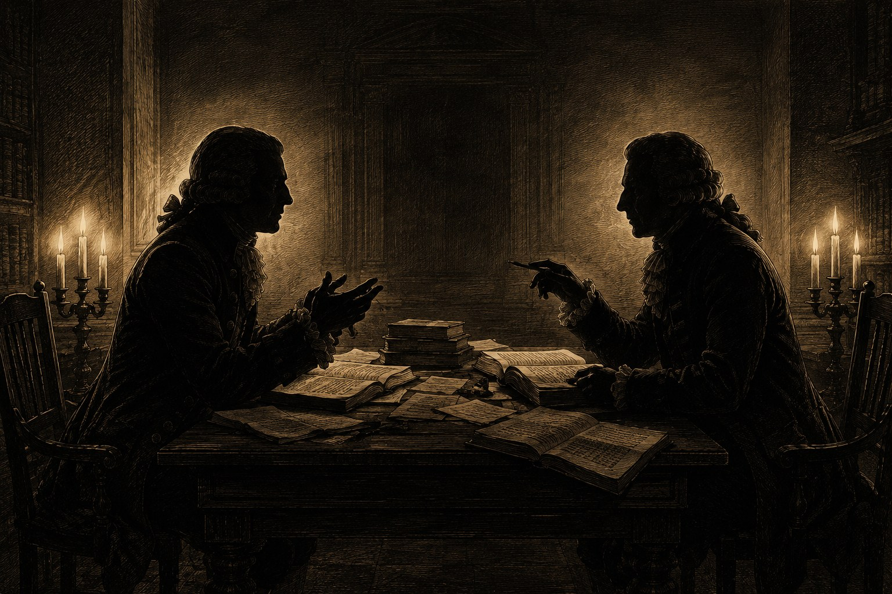

Биография Джона Гилла — не просто история пастора XVIII века. Это рассказ о беспрецедентной интеллектуальной дисциплине, богословской системе и ярлыках, которые история поспешила повесить на него после смерти. Мы разделили исследование на четыре самостоятельных текста.
Человек
От юности в Кеттеринге до формирования характера. Детство, призвание, семья, Декларация 1729.
Учёный
Экзегеза, раввинистика, 9-томный комментарий, учение о Троице, догматический и практический «Свод богословия».
Экзегет
Герменевтический метод, семь «универсальных» текстов против Уитби, отвержение и долг веры.
Наследие
Полемика с Уэсли, гиперкальвинизм, Сперджен, влияние на Америку, смерть, реабилитация.
III. Богословские труды и итог всей жизни
«Учение о Троице» — манифест против унитарианства
Гилл стал пастором в 1720 году — на следующий год после собрания в Солтерс-Холле (1719). На нём пресвитериане, индепенденты, особые и общие баптисты собрались, чтобы обсудить, можно ли требовать от пасторов тринитарной подписки. Пресвитериане и общие баптисты проголосовали против — и начали дрейф в сторону унитаризма. Индепенденты и особые баптисты проголосовали за — и сохранили ортодоксию. Как написал Реймонд Браун: «Отказ от подписки стал прелюдией к ереси». Гилл пришёл в свою церковь буквально в год этого разрыва.
Непосредственным поводом к написанию «Учения о Троице» (1731) стала не внешняя угроза, а опасность внутри баптистских церквей. Некий г-н Дэвис, врач и член баптистской церкви, написал трактат с савеллианскими тенденциями. Его аргументы биограф характеризовал как «вещи весьма ничтожные, без всякого подобия доказательства»; однако «будучи человеком доброго нравственного характера и мягкого, вкрадчивого поведения, его профессия вводила его во многие семьи, где он имел возможность внушать и распространять свои понятия». Это — деталь, которую биографы обычно упускают: личная привлекательность еретика опаснее его аргументов.
Майкл Хайкин формулирует исторический масштаб: «Когда другие деноминации — в частности, английские пресвитериане и значительная часть англикан — оказались совершенно неспособны удержать твёрдое исповедание тринитарной ортодоксии перед лицом натиска рационализма, английские кальвинистские баптисты это исповедание сохранили». И добавляет: именно через служение Гилла это стало возможным. Это его главное историческое достижение — по оценке самого Хайкина — превосходящее даже богословские трактаты.
К началу XVIII века в Англии набирала силу унитаристская волна. Среди пресвитериан и даже части баптистов появлялись учителя, отрицавшие божественность Иисуса Христа, личность Святого Духа, догмат о Троице. Это было время Просвещения — разума против веры, рационализма против откровения.
В 1731 году Гилл опубликовал The Doctrine of the Trinity Stated and Vindicated («Учение о Троице, изложенное и защищённое»). Это был не трактат, а боевой манифест:
Гилл маршировал через отцов Церкви: Игнатий, Поликарп, Иустин Мученик — в Никейский символ и каппадокийцев, через Реформацию к своему времени. Он показывал: унитарианство и арианство — не восстановление древности, а современное отступление. Троица — не средневековая схоластическая выдумка, а постоянное исповедание Церкви.
Для Гилла Троица была не второстепенной доктриной. Это был «фундаментальный артикул откровенной религии», как единство Бога — основание естественной религии. Удалить Троицу — значит разрушить само Евангелие. Если Христос не истинно Бог, Его жертва недостаточна. Если Дух не Личность, освящение становится абстракцией.
Раввинист — христианин с Мишной в руках
Когда Гилл поселился в Лондоне, он встретил Джона Скеппа — пастора баптистской церкви в Крипплгейте, автора Divine Energy. Скепп, не имея «либерального образования», приобрёл глубокое знание еврейского языка и раввинистической литературы. Общение с ним, по Риппону, «снова разожгло в Гилле пламя желания» углубиться в еврейские источники.
После смерти Скеппа Гилл выкупил большую часть его еврейской и раввинистической библиотеки. Это был перелом. Теперь у него были:
| Источник | Содержание | Использование Гиллом |
|---|---|---|
| Талмуд Вавилонский | Основной раввинистический свод, Вавилония, 500 г. н.э. | Сопоставление цитат ВЗ с масоретским текстом |
| Талмуд Иерусалимский | Ранний вариант из Палестины | Исторический контекст апостольской эпохи |
| Мишна | Устная Тора, кодификация ок. 200 г. | Еврейские обычаи новозаветного времени |
| Таргумы | Арамейские парафразы Писания | Идиомы Нового Завета, семитские обороты |
| Мидраш | Гомилетические комментарии | Раввинистические методы толкования |
| Зоар | Каббалистический мистицизм | Критическое ознакомление |
Для христианина XVIII века это было беспрецедентно. Большинство протестантских экзегетов относились к раввинистам с подозрением. Гилл читал их систематически, делал выписки, сравнивал интерпретации, интегрировал филологические наблюдения в собственный комментарий.
Его принцип был простым: Новый Завет писали евреи. Даже будучи богодухновенными, они мыслили еврейскими категориями, использовали еврейские идиомы, ссылались на еврейские обычаи. Понимание Таргумов, Мишны, методов мидраша освещает апостольскую экзегезу.
Например, в толковании на Бытие 1:2 Гилл ссылается на Таргум Онкелоса и Иерусалимский Таргум, чтобы показать, как древние евреи понимали движение Духа Божьего над водами. В толковании на Исход 19:9 он использует Таргум Ионафана, чтобы прояснить образ «густого облака», в котором явится Господь. Это не просто академические сноски — это попытка услышать текст так, как его слышали первые читатели.
Песнь Песней: самый личный труд Гилла
Среди всех трудов Гилла есть один, который стоит особняком — его раннее толкование Песни Песней (1728), написанное ещё до великого комментария. Если полемика с Уитби показывает его как бойца, а комментарий на весь Ветхий Завет — как учёного, то толкование на Песнь Песней открывает его как мистика.
Работа над этим толкованием началась ещё в 1724 году — всего четыре года спустя после рукоположения. Гилл проповедовал её как серию из ста двадцати двух воскресных утренних проповедей, пока не завершил всю книгу целиком. Первое издание вышло в 1728 году — с переводом халдейского парафраза (Таргума) на Песнь Песней и примечаниями к нему.
К этому времени Гилл уже успел включиться в острую полемику. В 1723 году дворянин Уильям Уистон — бывший кембриджский астроном и знакомый Ньютона, ставший унитарием, — выпустил «Дополнение к своему очерку о восстановлении истинного текста Ветхого Завета», в котором доказывал, что Книга Песни Песней не является канонической. Гилл ответил развёрнутым опровержением прямо во вступлении к своему толкованию — и доказал богодухновенность книги историческими и текстуальными аргументами. Реакция Уистона вошла в историю своей курьёзностью:
Риппон добавляет с едва скрытой иронией: «Очень мудрая причина!» Уистон в 1748 году не знал, что этот же «доктор Гилл», книгу которого он не хотел читать, уже получил учёную степень Маришальского колледжа в Абердине именно за то, что опровергло его аргументы.
Само толкование было встречено тепло: тираж разошёлся, в 1751 году вышло исправленное и дополненное издание, в 1767-м — третье. Джеймс Херви в «Тероне и Аспасии» (т. III) написал о нём: «у него такая обильная жила освящённого изобретения... и рассыпаны такие разнообразные и блестящие образы, что это не может не доставить высокого наслаждения пытливому уму; а также, — с таким богатым и восхитительным изображением величия Личности Христовой, свободы Его благодати для грешников и нежности Его любви к Церкви, что это не может не приносить острейшего наслаждения верующей душе». Джон Риппон свидетельствует, что это толкование «послужило тому, чтобы сделать имя Гилла известным, и, пожалуй, никакой другой его труд не принёс больше пользы в частных христианских домах».
Для Гилла Песнь Песней — это не аллегория истории Израиля (как учили Таргум, Раши и Ибн Эзра), не последовательное изображение церковных эпох (как полагал Коккейус), а изображение живого, нежного общения Христа и Его Церкви. Сперджен позже скажет, что комментарий Гилла на Песнь Песней — «прекрасное и опытное толкование», лучшее из его наследия по духовной глубине.
В этом отрывке виден весь Гилл: вечный замысел, воплощение, заместительная смерть, терпеливая благодать — всё вплетено в образ жениха, ожидающего невесту. Богословие здесь не абстракция, а любовная песнь.
IV. Полемика и дебаты эпохи
Гилл и Джордж Уайтфилд: мнимый конфликт
Существует распространённое заблуждение, что Гилл, как «гиперкальвинист», противостоял евангелизационному служению Джорджа Уайтфилда. На деле всё было ровно наоборот. Историк У. Т. Уитли писал: «В те самые годы, когда Гилл заперся в своём кабинете, чтобы толковать Новый Завет, Джордж Уайтфилд проповедовал по нескольку раз в день тысячам людей на Кеннингтон-Коммон». Из этого делался вывод, что Гилл сторонился евангелизма.
Но факты говорят обратное: церковь Гилла активно поддерживала открытое проповедование Уайтфилда на близлежащем Кеннингтон-Коммон. Джордж Элла, автор монографии о Гилле, замечает: «Представление о том, что Гилл сидел в своём кабинете, пока другие проповедники делали дело евангелиста, совершенно неверно. Комментарии Гилла были продуктом его кафедры. Они выросли из пяти и более проповедей, которые он произносил еженедельно в своей собственной церкви, помимо его проповеднической и лекционной деятельности в других церквях».
Лекции в Истчипе: двадцать шесть лет вечерних проповедей
В 1729 году Гилл начал еженедельную вечернюю лекцию по средам в Грейт Истчип (Great Eastcheap), Лондонское Сити. Эта серия продолжалась двадцать семь лет — и была прекращена лишь в 1756 году. Прощальная проповедь — на Деян. 26:22: «Хранимый Богом, я стою по сей день, свидетельствуя малому и великому».
В этой прощальной проповеди Гилл объяснил причины ухода с характерной для него прямотой:
Этим «серьёзным трудом» было не что иное, как «Толкование Ветхого и Нового Заветов» — над которым он работал до завершения ветхозаветной части в 1766 году. Гилл отказался от публичной трибуны ради кабинетного стола, и этот выбор дал миру девять томов комментария.
Гилл открыл серию проповедью на Псалом 71:16: «Я буду возвещать о правде Твоей, только о Твоей». Многие из этих проповедей легли в основу его книги «Дело Бога и истины». Вскоре баптисты, англикане и индепенденты объединились, чтобы арендовать залы для регулярных лекций Гилла — тяга к его учению перешагивала деноминационные границы.
Джеймс Херви (1714–1758), англиканский пионер пробуждения и один из членов «Святого клуба» Уэсли в Оксфорде, высоко ценил Гилла и использовал его издание проповедей Тобиаса Криспа. Херви писал:
Отдельным вкладом Гилла в историческое богословие стало его издание трудов Тобиаса Криспа (1600–1643) под названием «Христос превознесённый единственно» (Christ Alone Exalted, 1755). Криспа обвиняли в антиномизме. Гилл выступил его редактором и защитником, добавив пояснительные примечания, доказывающие ортодоксальность Криспа. Это редакторство само стало объектом споров — Сперджен впоследствии замечал, что Крисп «пошёл дальше, чем д-р Гилл». Тем не менее Гилл видел в нём мученика доктрины благодати, пострадавшего от ложных обвинений.
Полемика с Уэсли: о стойкости святых

Гилловский полемический стиль в «Доктрине предопределения» достигал редкой остроты — и одновременно богословской точности. Он открывал трактат словами: «Мистер Уэсли, объявив себя автором „Серьёзных размышлений о стойкости святых“, соблаговолил перевести спор на предопределение — довольствовавшись незначительными, мелкими и неуместными возражениями на часть написанного мной; не предприняв, однако, ни малейшей попытки опровергнуть хотя бы один аргумент, выдвинутый мной в защиту этой доктрины; — и всё же у него хватает дерзости называть это жалкое произведение своё „полным ответом на памфлет доктора Гилла“». Один современный богослов, обнаружив этот текст, заметил: «Да, это одно предложение».
Самая знаменитая прямая речь Гилла о цене богословской честности сохранилась через Сперджена: «Доктору Гиллу было сказано одним из членов его общины, который должен был знать лучше, что если он опубликует свою книгу „Дело Бога и истины“, он потеряет нескольких лучших друзей и лишится части дохода. Доктор ответил: "Я могу позволить себе быть бедным, но не могу позволить себе повредить своей совести"». Сперджен добавил: «Он оставил свою мантию и своё кресло в нашей ризнице». Мантия и кресло Гилла хранились в ризнице Метрополитен-Табернакля ещё при Сперджене.
Уэсли дал Гиллу характеристику: «Положительный человек, который сражается за свои убеждения сквозь огонь и воду». Сперджен написал о своём «выдающемся предшественнике» в письме другу Чарльзу Спиллеру: «Мой ежедневный труд — возрождать старые доктрины Гилла, Оуэна, Кальвина, Августина и Христа». Гилл и Августин поставлены в один ряд — не как риторический жест, а как богословская программа.
Было неизбежно, что Джон Уэсли столкнётся с Гиллом. Их дебаты о вопросе стойкости святых (perseverance of the saints) заполнили несколько книг с обеих сторон.
Уэсли утверждал: «Я верю, что святой может отпасть; что тот, кто свят или праведен в суде Божьем, может всё же так отпасть от Бога, чтобы погибнуть навеки. Тот, кто сегодня дитя Божье, завтра может стать дитятей диавола».
Гилл отвечал:
Пример экзегезы: Матфея 1:21 и раввинистический метод
Чтобы понять уникальный метод Гилла, рассмотрим его толкование на Матфея 1:21: «наречёшь Ему имя Иисус, ибо Он спасёт людей Своих от грехов их».
Гилл не просто объясняет текст. Он погружается в еврейский контекст:
Здесь виден метод Гилла: он использует Таргум (арамейский перевод-парафраз Ветхого Завета), чтобы показать, что еврейские читатели понимали спасение Мессии как вечное, а не временное. Это не просто академическая сноска — это показывает, что имя «Иисус» несёт в себе весь вес ветхозаветного ожидания вечного спасения.
В другом месте, толкуя Матфея 21:42 («камень, который отвергли строители»), Гилл цитирует Раши и Давида Кимхи, показывая, что некоторые еврейские раввины применяли этот псалом к Мессии. Он не просто утверждает, что Иисус — Мессия; он показывает, что еврейская традиция признаёт это толкование.
Завет благодати: архитектура богословской системы Гилла
Центральным стержнем всей богословской системы Гилла был завет благодати — не просто как доктрина среди прочих, а как сама архитектура спасения. Гилл учил, что завет благодати — это вечный договор между Тремя Лицами Троицы: Отец избирает народ, Сын берёт на Себя их искупление, Дух применяет плоды искупления.
Здесь виден характерный метод Гилла: он не просто утверждает доктрину, он выводит её из других доктрин логической цепью. Если благословения дарованы «прежде вековых времён» (Еф. 1:3–4; 2 Тим. 1:9), значит, личности избранных уже были вверены Христу. Если завет вечен (2 Цар. 23:5), значит, обе стороны завета — вечны. Если избрание безусловно, значит, оправдание в замысле Бога также не зависит от дел.
Это и привело его к доктрине вечного оправдания: избранные оправданы в вечном замысле Бога (как внутренний акт Божьего ума), хотя переживают оправдание во времени через веру. Гилл настаивал, что это не упраздняет веру, а укрепляет её: верующий знает, что его оправдание покоится не на его собственном акте веры, а на вечном решении Бога.
Образом вечного завета для Гилла служил супружеский союз Христа и Церкви. В «Своде богословия» он писал:
Одним из оригинальных вкладов Гилла в реформатское богословие стало явное включение Святого Духа в вечный совет искупленияPactum salutis — «завет искупления»: богословское понятие реформатской ортодоксии о вечном совете Отца, Сына и Святого Духа относительно спасения избранных. Важный нюанс Гилла — явное включение Святого Духа не как наблюдателя, а как заинтересованной стороны. (pactum salutis).Richard A. Muller, “The Spirit and the Covenant: John Gill’s Critique of the Pactum Salutis,” Foundations 24 (1981): 4–14; Daniel D. Scheiderer, “John Gill and the Continuing Baptist Affirmation of the Eternal Covenant,” SBJT 25.1 (2021): 65–90. Этому оригинальному вкладу посвящён отдельный раздел ниже.
Личность Христа: две природы, одно Лицо
В основании всей сотериологии Гилла лежит халкидонская христология: во Христе — две природы, Божественная и человеческая, соединённые в одном Лице без смешения. Отсюда его аккуратная формула общения свойств (communicatio idiomatum): свойства каждой природы сказываются о Лице Христа, но не переносятся с одной природы на другую.
Гилл тут же ставит важное различение: нельзя сказать, что «страдало Божество Христа» или что «человечество Христа вездесуще»; но можно сказать, что «Бог, Сын Божий, пострадал» и что «Сын Человеческий был на небе», когда был на земле. Свойство предицируется Лицу, а не абстрактной природе. По той же причине воплотилась не Божественная сущность как общая трём Лицам, — иначе воплотились бы и Отец, и Дух, — а именно второе Лицо, Сын.
Отсюда и одна из заметных особенностей Гилла, разрушающая удобный образ «просто повторяющего предание» богослова: он отвергает буквальное сошествие Христа во ад. Душа Христа по разлучении с телом, пишет он, «пошла не в ад, а на небо, будучи предана в руки Отца»; под «адом» в Пс. 15:10 он понимает могилу, а страдания завершились на кресте словом «совершилось».Gill J. A Body of Doctrinal Divinity, Book VI, «Of the Burial of Christ». Ориг.: «the soul of Christ, upon its separation from his body, went not to hell, but to heaven… By ‘hell,’ is meant the grave». ccel.org/ccel/gill/doctrinal. Перевод редакции. Состояния Христа он связывает по Флп. 2, а прославление разворачивает как воскресение — вознесение — сидение одесную Отца — второе пришествие; и в самом воскресении, замечает Гилл, «участие имел и Дух, третье Лицо».
Дух-Применитель: как вечный завет становится опытом
Если остановиться только на вечном завете и вечном оправдании, система Гилла легко кажется прямой линией: декрет — оправдание — готовый итог. Но у самого Гилла между вечным замыслом и пережитым спасением стоит применяющее действие Святого Духа. Именно Дух переводит решённое «прежде вековых времён» в реальную жизнь святых: возрождает, действенно призывает, освящает и свидетельствует. Без этого пласта портрет Гилла остаётся неполным — юридической схемой без опыта.
Освящение Гилл прямо называет «освящением Духа» и описывает как единый процесс от возрождения до славы:
При этом Гилл — последовательный монергист: в возрождении человек «всецело пассивен, но благодаря ему становится деятельным».Gill J. A Body of Doctrinal Divinity, p. 546 (Baptist Standard Bearer repr., 1839). Ориг.: «In regeneration men are wholly passive, but by it become active». Перевод редакции. Само применение спасения «остаётся делом Духа» и потому «никогда не бывает насильственным, но всегда духовным, любезным и кротким», обращаясь с человеком не как с «деревянной колодой», а как с разумным существом — «просвещая, убеждая, привлекая и склоняя». Именно это различение внешнего провозглашения и внутреннего действия Духа стоит и за спорами о «предложении Евангелия»: у Гилла всеобщее провозглашение истинно, но спасительная вера — плод применяющего действия Духа.
Тот же Дух не только рождает новую жизнь, но и свидетельствует о ней. Толкуя Рим. 8:16, Гилл говорит о свидетельстве, которое Дух «носит их духу, что они — дети Божии, и они это сознавали».Gill J. Exposition of the New Testament, on Rom. 8:16. Ориг.: «the witness he [the Spirit] bore to their spirits, that they were the children of God, of which they were conscious». johngill.thekingsbible.com. Перевод редакции. Это свидетельство Духа стало основанием той «опытной» уверенности, которую так ценила позднейшая традиция, вышедшая из Гилла.
Докторская степень: «Я об этом не думал, не покупал и не искал»
Когда Маришальский колледж в Абердине прислал Гиллу диплом доктора богословия в 1748 году, за кулисами произошло нечто примечательное. Письма из Маришальского колледжа показывают, что предложение о степени было принято без промедления и без предварительного ходатайства самого Гилла. Один из профессоров взял на себя связанные с этим расходы, так что степень не была ни куплена, ни выпросена. Степень была присвоена «с великой радостью» — за «дух учёности, проявившийся в его превосходном Комментарии на Новый Завет» и за «исключительные успехи в священной литературе, восточных языках и иудейских древностях».
Когда друзья стали поздравлять его, Гилл ответил коротко: «Я её не искал, не думал о ней, не покупал». Сперджен впоследствии добавил к этой истории: «Ему вполне заслуженно досталась степень, о которой он говорил это». Ни ложной скромности, ни тщеславия — только констатация факта.
В 1748 году, ближе к завершению публикации комментария на Новый Завет, Гилл получил почётную степень доктора богословия (Doctor of Divinity) от Маришальского колледжа в Абердине (Marischal College, Aberdeen). В дипломе было указано: «за необычайные успехи в священной письменности, восточных языках и иудейских древностях» («выдающееся мастерство в священной литературе, восточных языках и иудейских древностях» — Baptist Encyclopedia, 1881). Один из профессоров писал, что степень была присуждена за «честную и учёную защиту истинного смысла Священного Писания от нападок деистов и неверующих».
«Диссертация о древности еврейского языка, букв, гласных и акцентов» (1767) была впоследствии описана как «мастерское усилие, плод глубочайших исследований, которое одно само по себе показало бы, что Гилл был феноменом чтения и учёности, даже если бы он никогда ничего другого не публиковал» (Baptist Encyclopedia).
Гилл не знал заранее о присуждении. Когда диаконы церкви сообщили ему об этом, его ответ стал знаменитым:
Это была единственная академическая награда, которую Гилл получил за всю жизнь. Человек без формального среднего образования, никогда не учившийся в университете, получил высшую учёную степень от одного из старейших университетов Шотландии — исключительно за плоды своего труда. Современники называли его «доктором Многотомным» (Dr. Voluminous) — за объём, «баптистским Лайтфутом» — за раввинскую учёность.
Когда кто-то из оппонентов публично назвал его «халтурщиком в богословии» (bungler in divinity), Гилл не стал отвечать гневом. Он дал методичный, спокойный перечень своих познаний в Писании, языках, патристике и богословской литературе — и покрыл обвинителя позором. Сперджен, рассказывая эту историю, добавил: «он перечислил свои познания так спокойно и уверенно, что нападавший был вынужден замолчать». За этим эпизодом — не гордость, а принцип: Гилл полагал, что истина защищается методом, а не голосом.
«Диссертация о древности еврейского языка»: защита Масоры
В 1767 году Гилл опубликовал «Диссертацию о древности еврейского языка, букв, гласных и акцентов». Это был не просто филологический труд — это была защита божественного происхождения еврейского текста Ветхого Завета против рационалистической критики.
В то время некоторые учёные (включая христианских гебраистов) утверждали, что еврейские гласные и акценты были добавлены масоретами лишь в VI–VII веках н.э., а значит, текст был подвержен искажениям. Гилл возражал:
Современная наука не приняла все выводы Гилла (сегодня известно, что масоретская огласовка действительно была систематизирована позже). Но его главный пункт остаётся важным: еврейский текст Ветхого Завета был сохранён Божественным провидением. Его работа предвосхитила более поздние исследования масоретской традиции.
Таинства и церковные установления: крещение и Вечеря
Гилл придерживался классического баптистского взгляда на два таинства, установленных Христом: крещение и Вечерю Господню. Но его понимание было глубже простого ритуализма.
О крещении: Гилл настаивал, что крещение должно совершаться только над верующими (не над младенцами) и только через погружение. В трактате «Крещение младенцев — часть и столп папизма» (переизданном в Америке) он писал:
О Вечере Господней: Гилл исправлял несколько ошибок в практике своего времени:
| Ошибка | Исправление Гилла |
|---|---|
| Причащение младенцев | «Не младенцы... Только те, кто верит, что учение истинно» |
| Отказ мирянам в чаше (католическая практика) | «Чаша не должна быть отказана простым людям и ограничена священником» |
| Транссубстанциация | «Хлеб и вино — памятник жертвы, не тело и кровь буквально» |
| Преклонение колен как поклонение элементам | «Не должно поклоняться элементам, но помнить жертву» |
Гилл писал о целях Вечери:
Интересно, что в «Полном своде практического богословия» Гилл перечислял несколько «публичных установлений» церкви: Вечеря, проповедь, слушание Слова, молитвы и псалмы. Он не считал крещение церковным установлением в строгом смысле, так как оно совершается вне церкви (над индивидуумом до вступления в членство).
Эсхатология: духовное и личное царствование Христа
Эсхатология Гилла — одна из самых уникальных черт его богословия. Он сочетал элементы постмилленаризма и премилленаризма способом, который был необычен даже для его времени.
Гилл учил о двух царствованиях Христа:
Исследователь Чип Ламберт замечает: «Гилл — исторический премилленарист; но амилленаристы, постмилленаристы и прогрессивные диспенсационалисты найдут много, с чем согласиться в его взглядах». Гилл предсказывал, что духовное царствование может начаться между 1866 и 1913 годами — поразительно точное предвидение экуменического миссионерского движения конца XIX века.
О Божьей любви: богослов с нежным сердцем
Гилла часто представляют сухим рационалистом. Но его собственные слова о Божьей любви показывают другого человека:
За всеми его техническими рассуждениями о вечном оправдании, заветном посредничестве и частном искуплении стоит не логическая конструкция, а переживание вечной, неизменной любви. Гилл был богословом, который писал о любви Бога так, словно сам стоял в потоке этой любви.
Письмо к Кенникотту: текстология до текстологии
В 1767 году Гилл совершил поразительный научный труд. Он сопоставил все цитаты из Ветхого Завета, встречающиеся в Мишне, Иерусалимском и Вавилонском Талмудах и раввинистических мидрашах, с современным печатным еврейским текстом. Он извлёк из этого сопоставления список вариантов чтения — мест, где раввинистические тексты сохраняли иное еврейское чтение, чем масоретский стандарт.
Эти материалы Гилл отправил доктору Бенджамину Кенникотту в Оксфорд, который работал над критическим изданием еврейской Библии Vetus Testamentum Hebraicum (1776–1780). Кенникотт публично благодарил Гилла. Здесь лондонский баптистский пастор обеспечивал данными одного из величайших гебраистов века.
Гилл никогда не бывал на Континенте. Он не учился в иностранных университетах. Но через методичное, систематическое чтение текстов он стал тем, кем не мог стать через формальное образование: христианским гебраистом, равным университетским профессорам, — и, возможно, превосходящим многих.
Девятитомный комментарий — геркулесов труд одного
Начиная с 1746 года Гилл публиковал комментарий на Новый Завет (три тома, завершено в 1748). Затем — на Ветхий: Пятикнижие (1748–1750), Исторические книги (1750–1755), Писания и Пророки — до завершения последнего ветхозаветного тома в 1766 году. Всего девять томов folio, около шести тысяч страниц — первый полный построчный комментарий на всю Библию, написанный баптистом на английском.
Метод Гилла был постоянным:
Экзегетический мост: Аввакум 3:19 в толковании Гилла
Чтобы в полной мере оценить непреходящую ценность и духовную глубину метода Джона Гилла, обратимся к тексту, который лежит в самом основании нашей библиотеки — Аввакум 3:19: «Господь Бог — сила моя: Он сделает ноги мои как у оленя и на высоты мои возведёт меня».
В своём монументальном комментарии Гилл соединяет здесь филологическую точность, знание семитской поэзии и глубочайшее пасторское утешение:
Он сделает ноги мои как у оленя: ...это относится ко всем христианам, чьи ноги будут быстры, чтобы живо и радостно течь по пути Христовых заповедей, когда их души укреплены, а сердца расширены любовью и благодатью Божьей, чтобы с лёгкостью преодолевать все трудности и преграды... Раввинист Раши отмечает, что ноги самок оленей стоят твёрже и прямее, чем ноги самцов, потому здесь упомянуты именно они. Это указывает на стабильность святых: их сердца будут утверждены в вере во Христа... никакие трудности, кажущиеся холмами, горами или отвесными скалами, не устрашат их и не сдвинут с надежды Евангелия...»
«Полный свод богословия» — первая баптистская сумма
«Свод богословия» открывается программным абзацем, задающим весь масштаб труда:
Структура «Свода»: 11 книг, 156 глав в совокупности (7 книг догматических, 4 книги практических) плюс Приложение — отдельная диссертация о крещении еврейских прозелитов. «Свод практического богословия» (1770) — третий том и органическое завершение всей системы: «Доктрина влияет на практику, особенно евангельская доктрина, духовно понятая, с любовью принятая и мощно и глубоко пережитая». Риппон и позднейшие библиографии показывают важное различение: догматическая часть вышла в 1767–1769 годах, практический свод — в 1770 году; вместе они составили завершённую баптистскую систему. О догматической части он писал: «Мало найдётся богословских изданий на английском языке, заслуживающих большей известности, нежели эта 1091 страница».
В том же введении Гилл открыто признаёт: «Систематическое богословие, я отдаю себе в этом отчёт, сделалось весьма непопулярным». Он писал это в конце 1760-х годов — в эпоху, когда Просвещение провозглашало бессистемную «разумность» нормой. Ответ Гилла был прост: система нужна не ради системы, а потому что «там, где нет доктрины веры, нельзя ожидать послушания веры».
В предисловии к «Делу Бога и истины» Гилл объяснял, почему начал этот труд: книга Уитби «считалась неопровержимой; и она была почти у каждого на устах как возражение кальвинистам». При этом он сформулировал суть полемики в одной фразе: «арминианство и пелагианство есть самая жизнь и душа папства», а топор надлежит положить у корня дерева, а не рубить ветви.
Самая спорная цитата Гилла: «Я утверждаю, что их нет»
Пассаж из «Проповедей и трактатов» (т. III), ставший краеугольным в споре о «гиперкальвинизме»:
Этот пассаж Эндрю Фуллер приводил как позицию, которую он оспаривал. Однако исследователи указывают: Гилл умер в 1771 году — на 14 лет раньше «Евангелия, достойного всякого принятия» (1785). Сам Фуллер признавал, что Гилл не вступал в дискуссию о «Современном вопросе» напрямую; и Джон Райленд-младший, цитируя «Дело Бога и истины», освобождал Гилла от обычной гиперкальвинистской позиции.
В 1769 году, когда комментарий был почти завершён, Гилл опубликовал A Body of Doctrinal Divinity в двух томах quarto — первое систематическое богословие, созданное баптистом. В 1770 году, за год до смерти, вышел третий том всего свода — A Body of Practical Divinity.
До Гилла баптистское учение существовало в исповеданиях веры, отдельных трактатах, пасторских письмах. Не было баптистского эквивалента систематическим теологиям реформатов (Турретин, Ашшер) или англикан (Гукер). Гилл восполнил пробел: показал, что баптистское богословие — не провинциальное и не антиинтеллектуальное, а всеобъемлющая, когерентная, интеллектуально строгая система, укоренённая в Писании и непрерывная с Реформацией и древней Церковью.
| Книга | Содержание | Страниц (прибл.) |
|---|---|---|
| I. Теология | Бог, Троица, предопределение, провидение, творение | 650 |
| II. Антропология | Человек, грехопадение, Христос как Посредник | 580 |
| III. Сотериология | Искупление, возрождение, оправдание, освящение | 720 |
| IV. Экклесиология | Церковь, таинства, эсхатология | 440 |
Оригинальный богословский вклад: Дух Святой в вечном совете
Среди богословских вкладов Гилла один особенно выделяется — и практически неизвестен за пределами специалистов. Реформатские богословы до него (Гейдеггер, Луи де Дьё, Коккейус, Витсиус, Оуэн) обсуждали вечный совет спасения (pactum salutis) как договор исключительно между Отцом и Сыном, опираясь главным образом на Захарию 6:13. Дух Святой оставался в их схеме фигурой периферийной — «наблюдателем» или «свидетелем» вечного решения, но не его участником.
Гилл, глубоко убеждённый тринитарианец в эпоху рационалистических атак на учение о Троице, настаивал: подлинно троичное богословие требует подлинно троичного вечного совета. Святой Дух — не «наблюдатель», а «заинтересованная сторона» вечного завета. Гилл указывал три текстуальных доказательства: участие Духа в образовании человеческой природы Христа во чреве Марии (Мф. 1:18–20), Его укрепление Христа в земном служении (Мф. 12:28) и Его участие в принесении умилостивительной жертвы (Евр. 9:14).
Ричард Мюллер посвятил этому вкладу отдельную статью: «The Spirit and the Covenant: John Gill's Critique of the Pactum Salutis» (Foundations 24, 1981). Это, по Мюллеру, не богословский курьёз, а последовательный вывод из убеждённого тринитаризма: если Троица едина в вечном бытии, все три Лица должны быть едины и в вечном совете искупления.
Экклесиология: единственный пастор — богословская позиция
Гилл служил без второго пастора пятьдесят один год. Это не случайность и не обстоятельство — это богословская позиция, изложенная им в «Своде практического богословия» (глава 3) с той же системностью, с какой он разбирал любой экзегетический вопрос.
«Ординарные служители церкви — это пасторы и дьяконы, и только они, — писал он. — Антихрист ввёл в употребление целый сброд других должностей, о которых Писание ничего не знает». Разбирая Еф. 4:11, Гилл доказывал: «„Одних пасторами и учителями“ — не „одних пасторами“ и „других учителями“, как если бы они были разными; но „и учителями“ — союз καί здесь пояснительный, объясняющий, что имеется в виду под пасторами». Пастор и учитель — один офис, а не два. Епископ, пресвитер и пастор — три слова для одной должности (Деян. 20:17,28; Тит. 1:5–7). «Правящий пресвитер» как отдельная должность, характерная для пресвитерианства, им отвергается.
О сути рукоположения Гилл писал принципиально: «Суть рукоположения — в добровольном выборе и призыве народа и в добровольном принятии этого призыва избранным». Возложение рук — не сакральный акт передачи благодати, а «декларация» уже состоявшегося избрания. Слово χειροτονέω в Деяниях 14:23 означает «избирать голосованием» — Гилл цитировал Безу, Эразма, Ватабла и Этьена, все из которых переводили: «избрали», «назначили через голосование».
На собственном рукоположении 22 марта 1720 года три дьякона были рукоположены одновременно с Гиллом. Среди тех, кто отвечал на официальные вопросы от имени церкви, был Томас Кросби — впоследствии баптистский историк, автор History of the English Baptists (1738–1740), одного из главных первоисточников по истории английского нонконформизма. Лишь в конце жизни, когда силы стали изменять ему, Гилл принял Джона Риппона фактически как помощника — но официально оставался единственным пастором до самой смерти.
«Дело Бога и истины»: битва с Уитби
В 1733–1734 годах в Англии переиздавался труд Дэниела Уитби Discourse on the Five Points, который арминиане считали шедевром и «неопровержимым» аргументом против кальвинизма. Вокруг него ходила поговорка: «Почему вы не отвечаете доктору Уитби?». Гилл решил перечитать его и взялся за перо.
Результатом стал четырёхтомный труд The Cause of God and Truth («Дело Бога и истины»), выходивший с 1735 по 1738 год. Это была не просто полемика, а систематическое разрушение арминианской аргументации:
Когда Гилл готовился сдать рукопись в типографию, один из членов его церкви предупредил его: публикация книги лишит его лучших друзей и сократит доходы. Ответ Гилла сохранил Сперджен в своей «Автобиографии»:
Джон Уэсли, с которым Гилл полемизировал по вопросу о стойкости святых (1752), охарактеризовал его как человека, который «сражается за свои убеждения сквозь огонь и воду». Это была критика — но и невольное признание.
Пасторское сердце: «Как сияли его глаза!»
Из личного описания Гилла, сохранённого биографом: «Персона доктора была среднего роста — ни высок, ни мал, хорошо сложен, с небольшой склонностью к полноте; лицо его было свежим и здоровым, выражавшим силу ума и безмятежную бодрость духа, которые сохранялись у него почти до самого конца». Это совпадает с дошедшим до нас портретом работы Джорджа Вертью — единственным документальным изображением Гилла.
В молодые годы Гилл страдал частыми обмороками «во время публичного служения» — уязвимость, о которой почти не пишут. Риппон: «В молодые годы жизни он страдал от частых лихорадок, а также нередко от обмороков, которые случались с ним во время его публичного служения». Эта физическая уязвимость сочеталась с экзегетическим трудом по двенадцать часов в день. Те, кто сидел поблизости от его кафедры, регулярно передавали ему носовые платки во время проповеди — чтобы он мог вытирать обильный пот. Проповедовал буквально всем телом.
Несмотря на репутацию сурового полемиста и кабинетного учёного, Гилл был глубоко пасторским человеком. Он служил одной и той же общине 51 год. Его друг и биограф Джон Риппон писал о его служении за Вечерей Господней:
Гилл не просто защищал доктрины. Он жил ими. Его проповеди на среду вечером легли в основу многих его трудов. Он был человеком, который «никогда не осаждал города, который не взял бы, и не вёл битвы, которую не выиграл бы» (слова Огастуса Топлэди о нём).
Первые публичные труды: от гроба к полемике с деизмом
Первая напечатанная проповедь Гилла (1724) — «Слава благодати Бога, явленная в её преизбытке над преизбытком греха» из Рим. 5:20–21. Это была надгробная проповедь, и выбор текста говорит о богословском центре тяжести: он проповедовал благодать — даже над гробом. Второй напечатанный текст (1725) — «Урим и Туммим, обретённые во Христе» из Втор. 33:8: уже во второй работе виден его метод — раввинистический образ, раскрытый через христологию.
В 1727–1728 годах вольнодумец Энтони Коллинз выпустил «Схему буквального пророчества», направленную против епископа Чандлера. На некоем собрании кто-то обронил: «ни один кальвинист не может писать в этой полемике с каким-либо преимуществом». Друзья Гилла тут же предложили ему ответить. Он произнёс серию проповедей о мессианских пророчествах в хронологическом порядке жизни Иисуса и в 1728 году издал их как «Пророчества Ветхого Завета о Мессии». Труд вошёл в библиографический указатель «Salutaris Lux Evangelii» гамбургского учёного Фабрициуса (1731): имя Гилла вошло в европейский академический оборот через библиографические, а не только богословские каналы.
«Кафоличность без католичества»: богословие из церковных отцов
Одна из наиболее обсуждаемых в современной науке черт Гилла — его методическая «кафоличность». Исследователь Кристофер Грин (Themelios 49.3, 2024) называет Гилла «богословом с кафоличным духом», а не узким сектантским полемистом.
В «Своде богословия» при определении понятия «церковь» Гилл цитировал Климента Александрийского («не место, но собрание избранных» — Строматы VII). Для обоснования конгрегационального управления он привлекал Первое послание Климента Римского («апостолы назначали служителей с согласия или по выбору всей Церкви») и Евсевия (о восхождении Фабиана к епископству голосованием братьев). Против детского крещения он использовал Тертуллиана, который, по словам Гилла, «первым упомянул о крещении младенцев — и тут же говорил против него».
Примечательно: в своих экклесиологических текстах Гилл почти никогда не цитирует баптистских авторов — даже Беньяна, даже Кича. Грин указывает: это не случайность. Гилл намеренно строил баптистское богословие на вселенском фундаменте — чтобы показать: баптистские практики укоренены в первоначальной Церкви. В «Своде богословия» Гилл дважды цитировал «Тридцать девять статей» Церкви Англии — оба раза как аргумент за баптистскую позицию: «Даже Церковь Англии... определяет „видимую церковь как собрание верных людей“». Атака оппонента его же собственным оружием.
Порядок спасения у Гилла: оправдание до веры
Ключевое академическое уточнение из сборника Хайкина (Brill, 1997): «Гилл объяснял это в терминах трёх стадий оправдания — от вечности, в воскресении Христа и в „суде совести“ верующего. Первые два — виртуальные, а не актуальные». Большинство кальвинистов строят порядок спасения возрождение → вера → оправдание. Гилл строил иначе: оправдание → возрождение → вера. Одно это различие переворачивает привычное представление о его системе. Из трактата о вечной любви Бога к избранным: «союз со Христом предшествует вере... Вера не вводит нас в бытие во Христе и не соединяет нас с Ним; она есть плод, следствие и свидетельство нашего бытия во Христе и союза с Ним».
Солтерс-Холл: Гилл пришёл в год разрыва
Гилл принял Хорслидаунскую кафедру в 1720 году — ровно через год после собрания в Солтерс-Холле (1719), разорвавшего диссентерство. На собрании голосование прошло с минимальным перевесом — 57 против 53 — в пользу тех, кто отказался от обязательной тринитарной подписки. Пресвитериане и «общие» баптисты двинулись в сторону унитаризма. Индепенденты и «особые» баптисты сохранили ортодоксию. Как написал Реймонд Браун: «Отказ от подписки стал прелюдией к ереси». Декларация 1729 года Гилла закрепила этот выбор институционально — строго тринитарным исповеданием.
Источники и литература к Части II
Богословские утверждения сверены с собственными трудами Гилла и профильными академическими исследованиями, а не с популярными пересказами.
Труды Джона Гилла
- An Exposition of the Book of Solomon’s Song. London, 1728/1751.
- The Doctrine of the Trinity, Stated and Vindicated. London, 1731.
- The Cause of God and Truth. Four parts, 1735–1738.
- Exposition of the New Testament (1746–1748) and Exposition of the Old Testament (completed 1766).
- A Dissertation Concerning the Antiquity of the Hebrew-Language, Letters, Vowel-Points, and Accents. London, 1767.
- A Body of Doctrinal Divinity (2 vols., London, 1769) and A Body of Practical Divinity (London, 1770).
Исследования богословия и метода
- The Life and Thought of John Gill (1697–1771). Leiden: Brill, 1997.
- “John Gill and the Continuing Baptist Affirmation of the Eternal Covenant.” SBJT 25.1 (2021): 65–90.
- “The Spirit and the Covenant: John Gill’s Critique of the Pactum Salutis.” Foundations 24 (1981): 4–14.
- “Baptist Catholicity in the Ecclesiology of John Gill (1697–1771).” Themelios 49.3 (2024).
- Commenting and Commentaries. London: Passmore & Alabaster, 1876/1890.